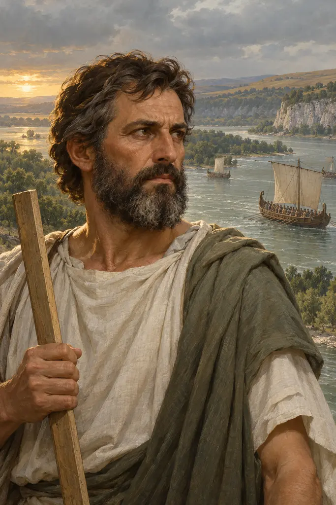
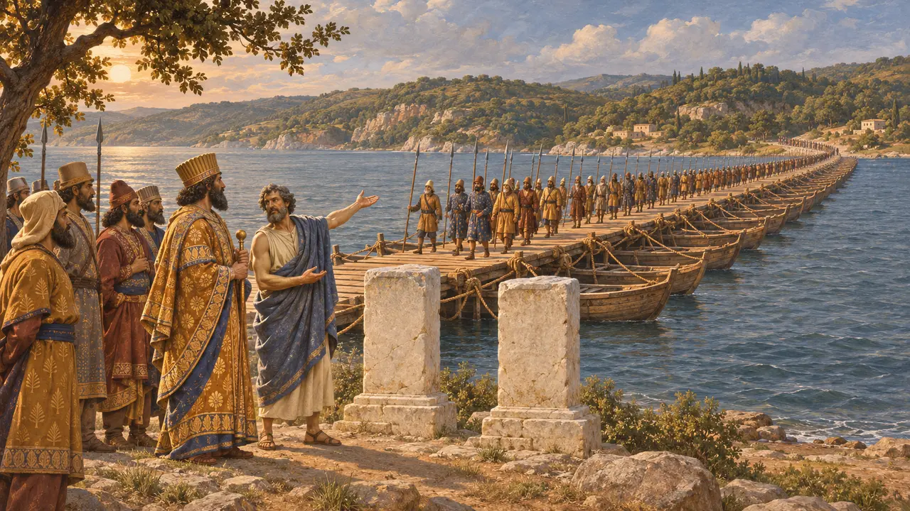
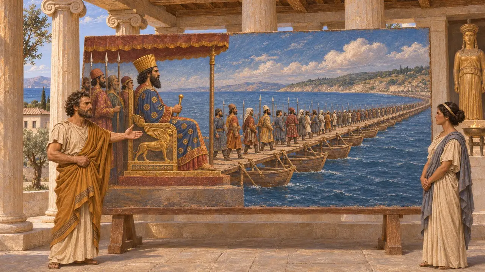
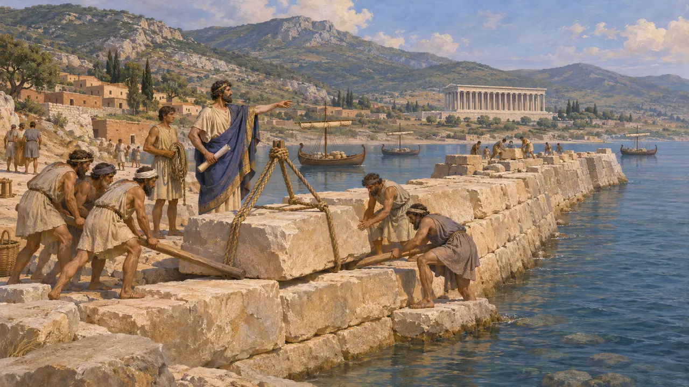
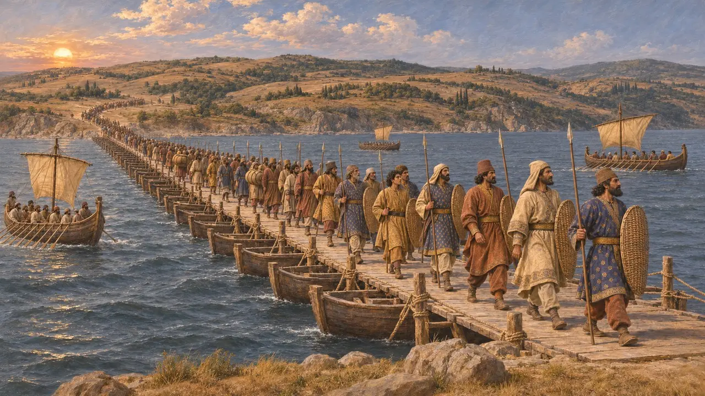

Samoslu Mandrokles
Dareios için Bosporos'a köprü kuran Samoslu Yunan mühendis, MÖ 513 dolayları
Oyunda: Bölüm 6: Tekne Köprüsü
Mandrokles, Dareios'un İskit seferi için ordusunu Asya'dan Avrupa'ya geçirdiği tekne köprüsünü muhtemelen yaklaşık MÖ 513'te inşa eden Samoslu bir mühendisti. Onun hakkında bilinenlerin neredeyse tamamı Herodotos'tan gelir. Köprüsü, Yunan kaynaklarında kaydedilen en eski Bosporos geçişidir ve Pers krallarının Yunan uyruklarının becerilerinden nasıl yararlandığını gösterir.
Oyunda: Kronik, Herodotos'u izleyerek Mandrokles'i, Dareios için Bosporos'u teknelerle köprüleyen ve geçişi gösteren bir resmi Samos'ta adak olarak sunan Samoslu olarak tanıtır.

Bosporos'a Köprü Kurmak
Antik anlatıHerodotos'a göre Dareios Susa'dan Khalkedon'a geldi ve Mandrokles'in yaptığı bir tekne köprüsüyle Avrupa'ya geçti; Herodotos'un tahminine göre köprü, Byzantion ile boğazın ağzındaki tapınak arasında, tam ortadaydı. Dareios oraya beyaz taştan iki sütun diktirdi ve üzerlerine ordusundaki halkları Asur ve Yunan harfleriyle yazdırdı. Byzantionlular daha sonra bu taşları bir Artemis sunağı için kullandılar, yalnızca bir taşı Dionysos tapınaklarının yanında bıraktılar.
Herodotus 4.85-87

Kralın armağanları ve resim
Antik anlatıHerodotos'a göre Dareios köprüden öyle memnun kaldı ki Mandrokles'e her türden armağandan onar tane verdi. Mandrokles ödülün bir kısmını, geçişin tamamını betimleyen bir resme harcadı; resimde Dareios tahtında oturmuş, ordusunun karşıya geçişini izliyordu. Mandrokles bu resmi Samos'taki Hera tapınağına adadı. Herodotos'un aktardığı manzum yazıt, Kralın dileğini yerine getirdiği için Mandrokles'in bir taçla, Samos'un da şanla ödüllendirildiğini dile getirir. Resim günümüze ulaşmamıştır.
Herodotus 4.88

Samos'a özgü bir yapı geleneği
Antik anlatıHerodotos'a göre Yunan dünyasının en büyük üç eserini Samoslular yapmıştı: Megaralı Eupalinos'un bir dağın içinden açtığı su tüneli, büyük bir liman mendireği ve Rhoikos'un başlattığı, Herodotos'un bildiği en büyük tapınak. Otanes, Dareios'un saltanatının başlarında Syloson'u tiran olarak başa getirdiğinden beri Samos Pers egemenliği altındaydı. Herodotos, İstros'ta bulunan Yunan tiranları arasında Syloson'un oğlu Aiakes'i de sayar; dolayısıyla Mandrokles, Dareios'a bir tebaa olarak hizmet etmişti.
Herodotus 3.60; Herodotus 3.139-149; Herodotus 4.138

Geçişin tarihi ve büyüklüğü
TartışmalıHerodotos İskit seferi için bir yıl vermez. Tarihçiler onu genellikle MÖ 513 dolaylarına yerleştirir, ancak bazıları birkaç yıl önceki bir tarihi savunur; seferin amaçları da tartışmalıdır. Herodotos, Dareios'un 700.000 kişi ve 600 gemiye komuta ettiğini söyler. Modern tarihçiler bu rakamları fazlasıyla abartılı bulur; yine de büyük bir ordunun karşıya geçtiği açıktır.
Herodotus 4.87; P. Briant, From Cyrus to Alexander, 2002
Kaynaklar
- Herodotus 4.83-89
- Herodotus 3.60
- Herodotus 3.139-149
- Herodotus 4.138
- P. Briant, From Cyrus to Alexander, 2002
- A. R. Burn, Persia and the Greeks, 1962